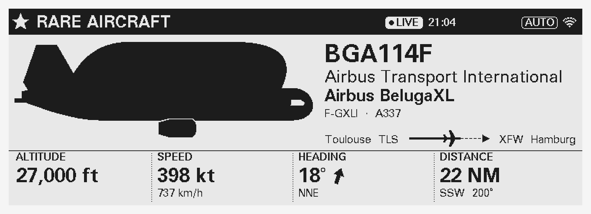
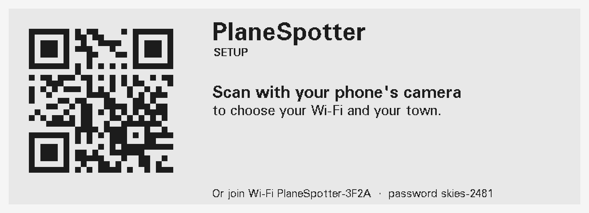
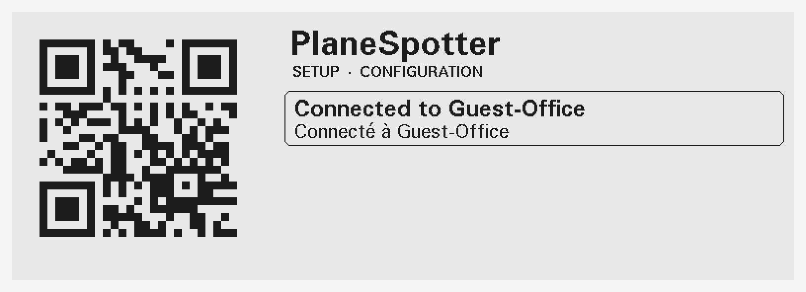
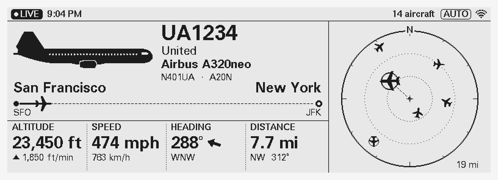
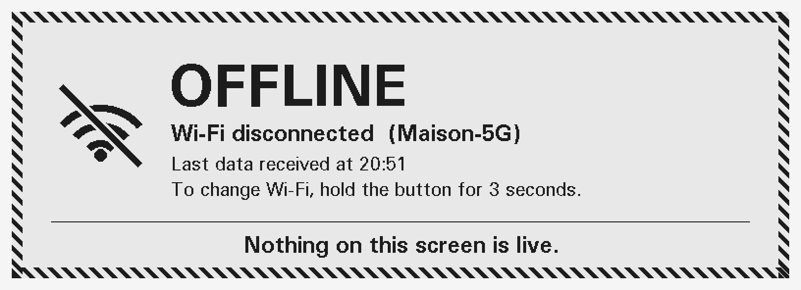
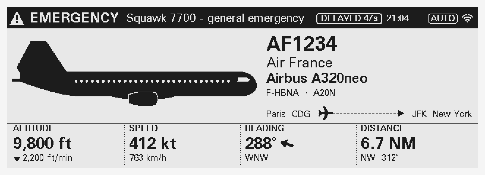
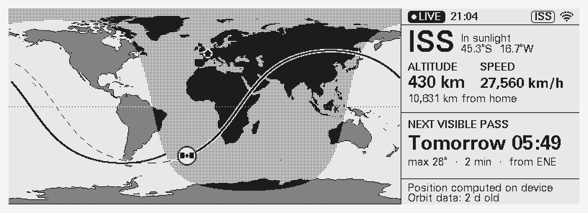
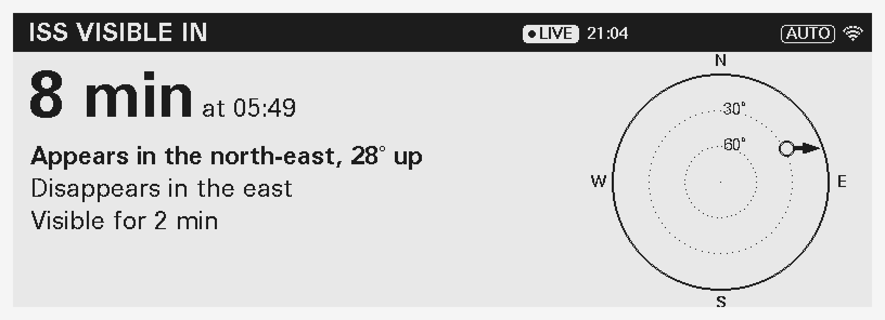
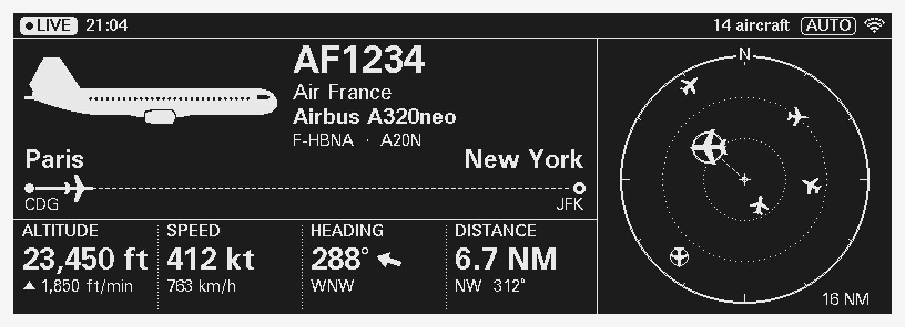
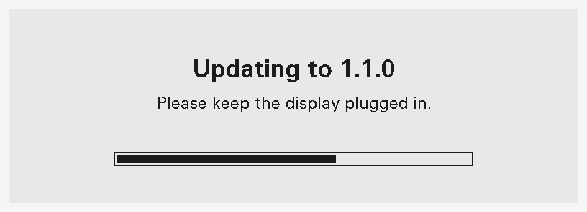

Print the five parts from enclosure/stl/ in PLA or PETG: 0.2 mm layers, 3 walls, 15–20% infill.
Want the sparkly look? Use black "galaxy" PLA, or turn on fuzzy skin for the outer walls.
This case hasn't been test-printed yet. On your first unit, check two things before printing the rest:
If either is off, change the matching number at the top of enclosure/enclosure.py and regenerate the files.
Left: the DESPI-C579 adapter. Right: the ESP32-S3 board. Wire colours are up to you.
Drop the button cap into the hole in the top, from inside. Push the push button up into the tube until it touches the cap. Fix it with a dab of hot glue, then connect its two wires.
Lay the ESP32 board upside down (pins up) in the base cradle, USB-C end at the back. Hold it with a strip of double-sided tape.
Lay the bezel face down. Put the glass in its pocket, screen side down, ribbon cable in its cutout on the right (seen from the front). Lay the backer on top about 6 mm low, clear of the two hooks, then slide it up until it stops under them.
Fold the ribbon gently around the backer's right edge, plug it into the DESPI-C579, and stick the adapter to the back of the backer near that edge. Connect the jumper wires as shown above.
Hook the top of the bezel under the body's top edge, swing the bottom in, and fit the 2 × 10 mm screws from inside through the bottom tabs.
Slide the base in from below with the USB-C port lined up with the opening at the back. Fit the 4 × 8 mm screws and stick on the feet.
In the PlaneSpotter folder, install the build tool once:
python3 -m pip install platformioThen build and load the software onto the board:
pio run -t uploadUpdates come from the GitHub project named in include/config.h. It's already set, so every unit you flash will find its updates.

The screen wakes up with a QR code. That means it worked.
Set it up on your own Wi-Fi (see Part 3) and watch it for a day. Planes showing? Times right? Great.
Hold the button for 10 seconds to erase your Wi-Fi and town. A warning appears at 6 seconds; keep holding. It restarts on the setup screen, ready for its new owner.
Unplug it and pack it with the printed quick-start card (docs/quickstart/quickstart.pdf).
Use the USB-C cable. Any phone charger works.
Your phone joins the display's own little Wi-Fi network, and the setup page opens by itself. No app needed. If the page doesn't open, join the Wi-Fi shown at the bottom of the screen with the password next to it.

The display checks that it can reach the internet, then tells you on the phone and on the screen. Shortly after, the planes appear.
The screen says the password didn't work.
Scan again and retype it carefully.
Your network isn't in the list, or "network not found". The display only sees 2.4 GHz Wi-Fi.
Pick your router's 2.4 GHz network (it often has the same name), or use a phone hotspot.
Hotel-style guest Wi-Fi that wants you to click "Accept" on a web page.
Use home Wi-Fi or a phone hotspot instead.
Office Wi-Fi that asks for a username. It's not supported on purpose, so your work password never gets stored on a gadget.
Use home Wi-Fi, a guest network without a sign-in page, or a phone hotspot.


It keeps retrying by itself. If your Wi-Fi changed, hold the button for 3 seconds to pick a new one.
Something unusual nearby (a Beluga, a giant An-124, a B-52, an Osprey, military jets) takes over the whole screen with a ★ banner.

An aircraft declaring an emergency always wins the screen, whatever else is going on.

In Auto mode, when no planes are near, it shows the International Space Station live on a world map, with the next time you can see it.

Ten minutes before the ISS crosses your sky (when it's actually visible), the display tells you where to look and how high it will go. Go outside!
Switch modes: Auto → Aircraft → ISS. Auto shows planes, and the ISS when it's quiet.
Opens Settings: a new QR code to scan. Tap again to close.
Erases everything and starts setup again. A warning shows at 6 seconds, so you can let go.
The settings page closes when you tap the button, press "Close settings", or after 10 minutes of nothing.

Prefer white on black? Pick Dark under Theme.
Once a day the display checks for new software. If there is some, it downloads it, checks it's genuine, installs it and restarts.

Afterwards the screen says "Updated to 1.1.0". If the new version misbehaves, the display goes back to the old one by itself and says "Update failed, back on 1.0.0". Nothing for you to fix.
Want control? Settings has Check for updates, and you can turn automatic updates off.
python3 tools/release.py --notes "What changed"python3 tools/release.py --promoteUpdates are signed with keys/ota_private.pem on your computer. The displays only accept updates signed with it.